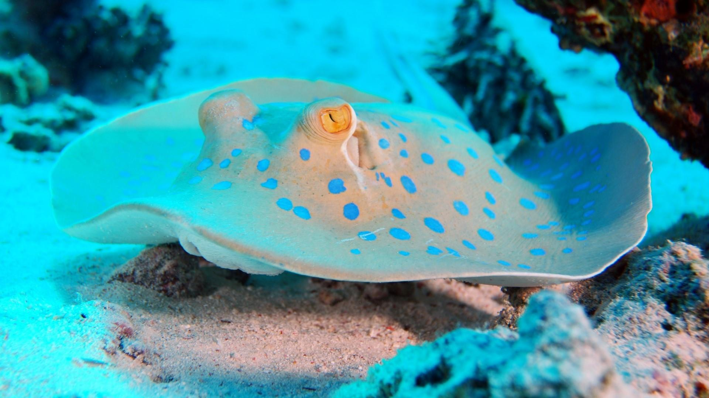
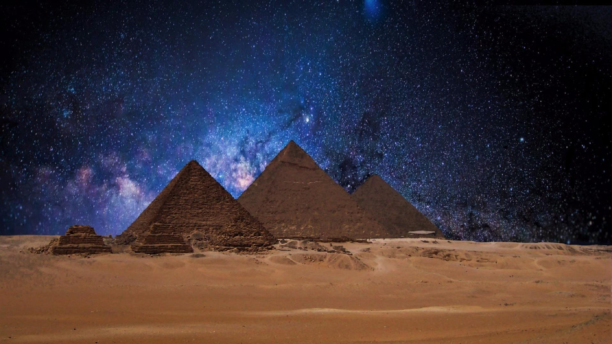
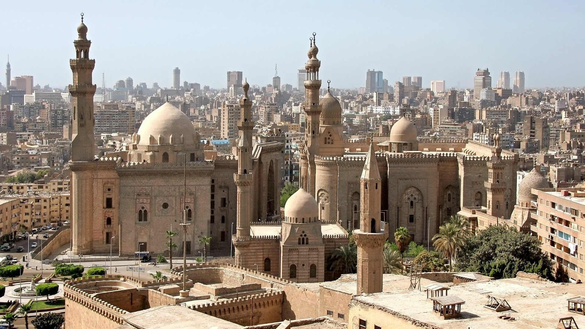
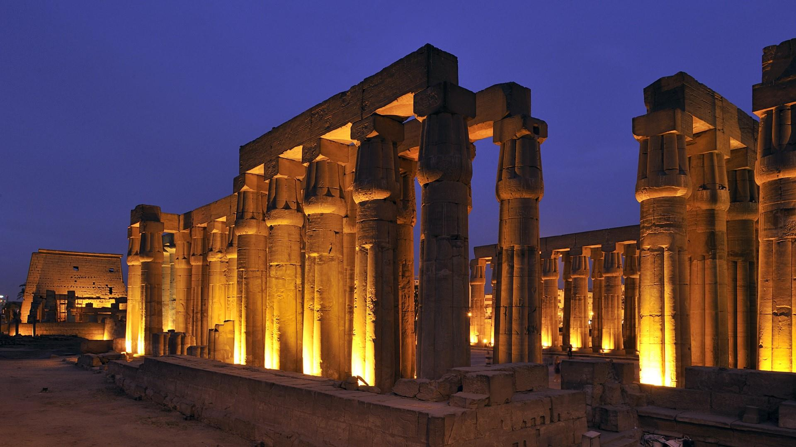
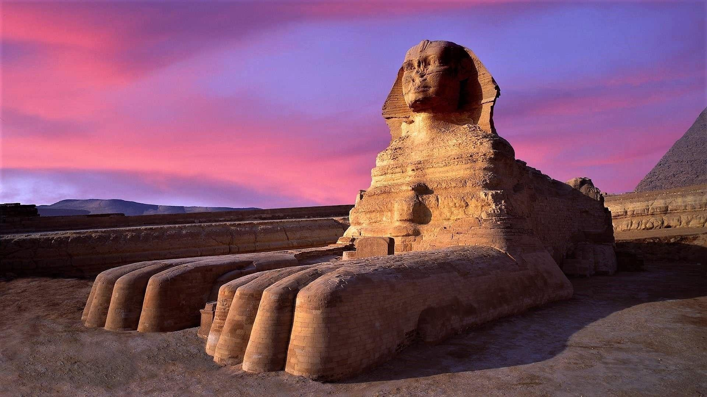

For 1,400 years, Cairo has always been the political and cultural center of the Islamic world. Any intruder must respect the Islamic culture and feelings there to exist. Therefore, Cairo is the city with the best preservation of ancient Islamic culture and architecture. The representative buildings and mosques of the past have been repaired and protected by the rulers. For example, the Al-Azhar Grand Mosque, built in 970 AD, still retains its original majestic style. The courtyard is wide, surrounded by halls and halls. It has 13 high platforms, 9 gates, and 5 high minarets. It has a strong North Africa and ancient times Arabic Islamic style. The mosque has been an academic institution for Islamic studies and education since its establishment, and later developed into the world’s number one Islamic university, Al-Azhar University. This university has developed into the world’s largest Islamic institution of higher learning in modern times, accommodating hundreds of thousands of students. What this university is most proud of is the library. For more than a thousand years, the collection of books has been increasing without serious damage or destruction. Various types of ancient books are well preserved, making it the world's largest treasure house of Islamic knowledge and culture.
Cairo creates one-third of Egypt’s GDP every year, and many Egyptians choose to find employment and development opportunities in Cairo. As a world-famous tourist city, Cairo has also attracted a large number of foreign tourists to visit here.
Cairo is the country's largest industrial and commercial city, as well as the country's largest economic and financial center, with a high concentration of industry. Manufacturing output value accounts for nearly half of the country. The textile industry, especially the cotton spinning industry, occupies an important position. Traditional crafts are very distinctive. Cairo has developed petrochemical industry, machinery manufacturing industry and automobile industry. The satellite city Helwan in the south of the city is the country's largest iron and steel industry center and a new heavy industrial area.
In addition to the cultivation of unique crops such as onions and sesame seeds, the trade in textiles such as cotton cloth is also prosperous here.
 From Cairo to Alexandria, you can board at Cairo Airport, Ismailia Square in Heliopolis, Tahrir Square near Hilton Nile Hotel and Giza Square and Tahrir Square near Sheraton Hotel Cairo bus.
There are also many long-distance stations around the Ramses Square in Cairo. Kuro near the square is the ancient world cultural capital and the cultural center of West Asia and North Africa. There are three ancient urban areas outside the westernized city center. On both sides, television buildings, churches, municipal buildings, and hotels, high-coast special carriages provide convenience for female passengers, and the escalators and elevators at each exit Pedestrians provide a lot of convenience. Kailali Station has buses to Delta, Canal City, Upper Egypt, Fayoum and Hongmei, and about 25 kilometers east of the square, there is Sinai Station to Sinai. In addition, at Al-Azhar station in Cairo, buses to the inner oasis can be taken, and there are buses to Matrouh in Tahrir Square.
 